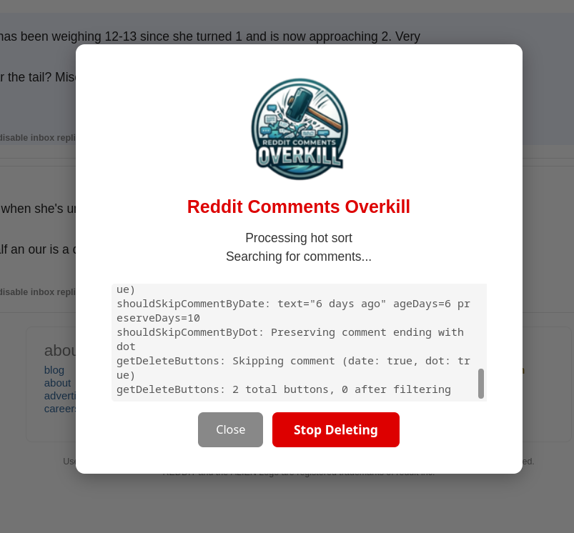

A browser userscript that automatically deletes all your Reddit comments. It's designed to be reliable and respect Reddit's rate limits while ensuring complete coverage of your comment history. Reddit has a lot of protections in place to throttle requests. This script does NOT try to be the fastest but instead tries to ensure ALL comments will eventually be gone without requiring user interaction.

Complete Coverage: Cycles through all 4 sort types (new, hot, top, controversial) to find every comment. However due to the way Reddit caches comments, you may have to run the script again after some hours.
Date Protection: By default, comments from the last 10 days are preserved. Configurable in the confirmation modal.
Dot Preservation: If you want to keep a particular comment no matter what, just edit that comment and add a single dot (.) on its own line at the end. The script will detect this and skip it regardless of age. Toggle this feature in the confirmation modal. (Default: enabled)
Dry-Run Mode: Log actions without actually deleting comments. Useful for testing dot detection and previewing deletions. Toggle in the confirmation modal.
Rate Limit Handling:
fetch and XMLHttpRequest.Detailed Logging: All actions, including deletions, sort changes, and rate limit warnings, are logged to the browser's developer console (F12).
Install a userscript manager (if you don't have one):
Install the script:
reddit-comments-overkill.user.js file in this repositoryVerify installation:
https://old.reddit.com/user/yourusername/comments/Direct install link: https://github.com/xpufx/reddit-comments-overkill/raw/refs/heads/main/reddit-comments-overkill.user.js
Click the "Start Deleting" button in the bottom-right corner
A confirmation modal will appear where you can configure:
The script will:
To stop the process, click "Stop Deleting" (button turns red when running)
Most settings can be configured in the confirmation modal when you click "Start Deleting":
. on its own lineFor advanced configuration (rate limits, delays, sort order), edit the CONFIG section at the top of the script file.
old.reddit.com/user/yourusername/comments/)Please note that a significant portion of this codebase, including its core logic and structure, has been generated by an AI. The functionality has been manually tested using Violentmonkey.
This project is licensed under the GNU General Public License v2.0 (GPL v2).
Copyright (C) 2025 xpufx
This script modifies your Reddit account by permanently deleting comments. Use at your own risk. The authors are not responsible for any data loss or account issues. Always consider the implications of bulk deleting your comment history.